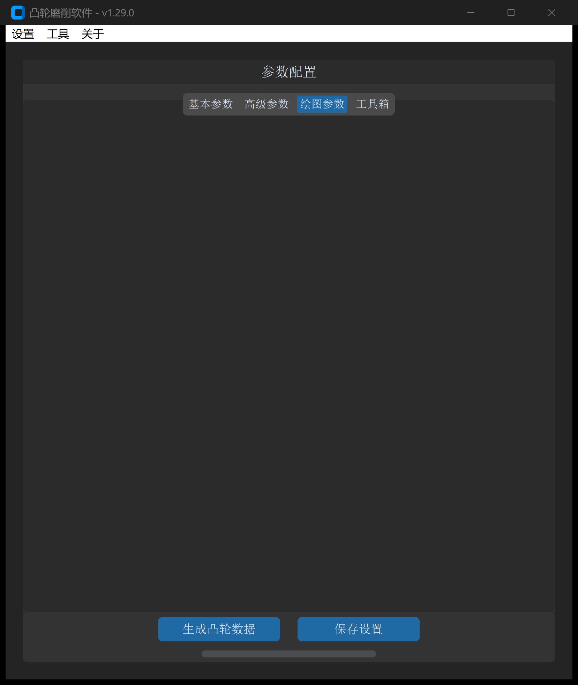
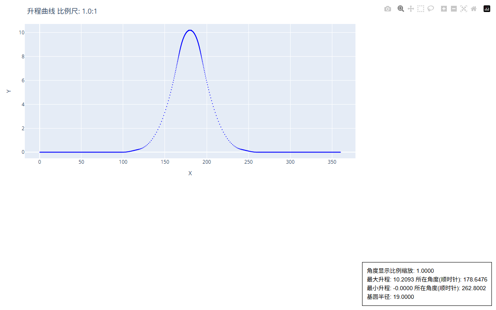

XY 点位文件建模
“XY 点位文件”工具用于将离散的二维笛卡尔坐标点列（例如三坐标测量机扫描点、光学反求点或数学计算点）转换为符合工业标准的闭合凸轮 DXF 文件，并在生成过程中同步计算运动学升程曲线。
1. 操作界面与参数布局
打开主界面并切换至 绘图参数 -> XY 点位文件：

2. 参数定义与配置说明
| 参数项 | 界面字段 / 标识 | 默认值 | 详细说明与推荐配置 |
|---|---|---|---|
| 选择类型 | points_choice_type |
单文件 | 单文件：处理单一 .txt 或 .dat 点位数据文件；文件夹：批量读取指定目录下所有离散数据并串联重构 |
| XY 点位数据地址 | points_file_path |
无 | 输入源文件或源目录的完整本地路径（支持点击“选择”浏览） |
| XY 数据索引号 | points_data_index |
01 |
指定每行文本中属于 X 和 Y 坐标的字段索引（从 0 开始计数）： • 01：第 0 列为 X，第 1 列为 Y（最常用）；• 56：第 5 列为 X，第 6 列为 Y（适用于带时间、角度、速度的多列格式） |
| 交换 XY 数据 | points_exchange_xy |
否 | 若选择“是”，则强制将提取的第 1 个坐标视作 Y，第 2 个坐标视作 X |
| 比例系数 | scale_factor |
1.0 |
几何缩放倍数： • 1.0：保持原始尺寸；• 25.4：英寸转公制毫米；• -1.0：实现轴向镜像操作 |
| 图形旋转角度 | graph_rotate_angle |
0 |
绕坐标原点（）旋转凸轮角度（度）： • 正值：顺时针旋转； • 负值：逆时针旋转 |
| 绘制升程图形 | draw_lift |
勾选 | 勾选后，软件自动计算并输出动态升程、速度、加速度交互图表及 P65 升程文本 |
| 基圆半径 | base_circle_radius |
20.0 |
凸轮理论基圆半径（mm）。升程计算以该半径为基准面进行偏移分离 |
| 升程方向 | lift_direction |
顺时针 | 极坐标展开计算的旋转方向。由于外圆凸轮磨床主轴加工多为顺时针进给，推荐保持顺时针以便于加工比对 |
| X 轴缩放 | lift_curve_x_axis_scale |
1.0 |
针对 HTML 交互图表中的 X 轴（转角或行程）显示比例。升程变化极小（）时，调小该值有助于拉伸波形观察 |
| DXF 保存地址 | output_path |
必填 | 目标生成 DXF 文件的保存路径 |
3. 点位文件格式规范与容错
软件底层内置了强大的文本解析器，能够自动过滤表头、注释与非数值行：
规范数据示例（标准双列）
15.0000 0.0000
14.8781 -0.3763
14.7518 -0.7512
14.6211 -1.1245
14.4860 -1.4963
...
多列复合数据示例（设置索引为 56）
=====================================================================================
t a V s Rbig Xb Yb Rs Xs Ys
=====================================================================================
0.0000, 0.0000, 0.00000, 0.0000, 99.0800, -64.1672, -75.4945, 148.5000, -100.1537, 109.6426
1.0000, 3.6884, 0.00310, 0.0001, 99.0802, -62.8400, -76.6030, 148.4998, -102.0518, 107.8778
2.0000, 7.2052, 0.01220, 0.0008, 99.0818, -61.4944, -77.6894, 148.4983, -103.9176, 106.0796
...
[!TIP] 软件支持逗号（
,）、空格（`）及制表符（\t`）作为列分隔符。遇到带分隔线或说明文字的表头时，系统会自动尝试数值转换，失败行将静默跳过，无需用户手动删改原文件。
4. 输出成果与交互图表
点击 生成凸轮数据 后，系统将产出以下成果：
- 工业级 DXF 文件：包含按指定方向闭合的完整轮廓，自动校准起点相位。
- 克林伯格 P65 升程文件（
*-distance-*.txt）：格式与齿轮测量中心/凸轮测量仪完全匹配，包含 步距 的标准升程值。 - 交互式升程图表（HTML）：在本地浏览器自动弹出或保存于输出目录，提供极高分辨率的升程与曲率质量诊断：
